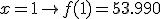
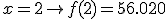
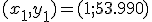
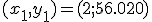
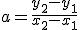
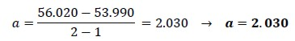
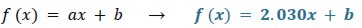
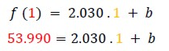
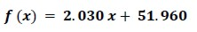
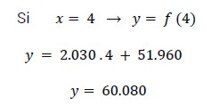

Caso Práctico Pendiente de la recta
Veamos un ejemplo:
El total de ingresos obtenidos por ventas de electrodomésticos de la empresa “Frave”, en los dos primeros trimestres del año, fue de $ 53.990 y $ 56.020, respectivamente.
Si se supone un crecimiento lineal de las ventas, ¿qué cifra es razonable estimar para el total de ingresos que tendrá Frave en el último trimestre del mismo año, si continúa el mismo ritmo de ventas? En esta situación, conocemos que:
1º trimestre → $53.990
2º trimestre → $56.020
Conocemos los puntos que pertenecen al gráfico de la función lineal. Luego, para encontrar dicha función lineal que modeliza los ingresos que Frave obtuvo por las ventas, debemos encontrar los valores de la pendiente a y de la ordenada al origen b. Es decir: . A partir de los datos anteriores podemos escribir:


Entonces, los pares ordenados (1; 53.990) y (2; 56.020) pertenecen a la recta que representa la función lineal. ¿Cómo encontramos la pendiente y la ordenada al origen de esta función lineal?
A partir de la información dada por la empresa conocemos los puntos que pertenecen al gráfico de la función lineal
Datos:


La pendiente a de la recta que contiene a los puntos conocidos se obtiene a partir de:

Calculamos:

Así, la función lineal es

Y, como el punto (1; 53.990) pertenece al gráfico de la función, debe verificar:

Despejamos b

Para la empresa Frave podemos afirmar que un modelo lineal que refleja sus ingresos por ventas está representado por la función:

Esta función permite responder la pregunta del problema: ¿en cuánto se estiman los ingresos por ventas del 4º trimestre?

Ahora sí podemos predecir y dar una respuesta a la empresa:
Si los compradores continúan como hasta ahora, se puede esperar obtener, por ventas de electrodomésticos, entre octubre y diciembre, un ingreso de $ 60.080.

Obra publicada con Licencia Creative Commons Reconocimiento Compartir igual 4.0